About Me
I am a Software Engineering graduate with a CGPA of 3.56/4.00 and
professional experience spanning software development, interactive
systems, teaching, and academic project coordination. My background
combines hands-on engineering with experience working across
different stages of technical projects, from implementation and
testing to integration and delivery.
Through industry and academic work, I have developed experience with
programming, software engineering, artificial intelligence,
interactive systems, databases, UI/UX, and cross-platform
development. Working on different types of projects has taught me
to approach technical problems from multiple perspectives rather
than limiting myself to a single application domain.
I am now interested in graduate study and research that allows me to
deepen my understanding of computing, investigate meaningful
technical problems, and develop rigorous research skills. I am open
to exploring different research directions where my software
engineering background, practical development experience, and
interdisciplinary perspective can contribute to a research group.
3.56
/ 4.00 CGPA
2+
Years Experience
10+
Games & Projects
250+
Students Mentored
Research & Graduate Study
I am interested in pursuing graduate study and research in
technology-related and interdisciplinary fields, with the goal of
developing stronger research skills and investigating meaningful
technical problems.
My current research interest is
resource-aware adaptive AI for real-time interactive systems
.
I am interested in how intelligent agents can adapt to users and
changing environments while remaining responsive under latency,
memory, and computational constraints. My background in state-machine
AI, pathfinding, multiplayer systems, performance profiling, and HCI
provides a practical foundation for this direction. I am open to
applying these ideas to simulation, visual computing, training,
immersive learning, or other intelligent interactive systems.
I am open to research directions that align with my technical
foundation while allowing me to learn new methodologies, domains,
and perspectives. I would particularly value the opportunity to
work within a strong research group where I can contribute through
programming, experimentation, implementation, analysis, and
rigorous problem solving.
Adaptive AI Agents
Real-Time Intelligent Systems
Resource-Aware Computing
Interactive Systems
HCI and Immersive Technology
Software Engineering
Academic & Technical Projects
FarZone
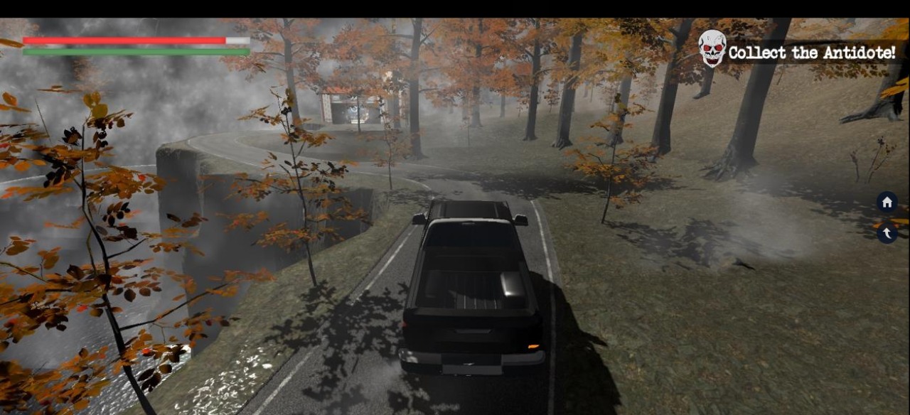
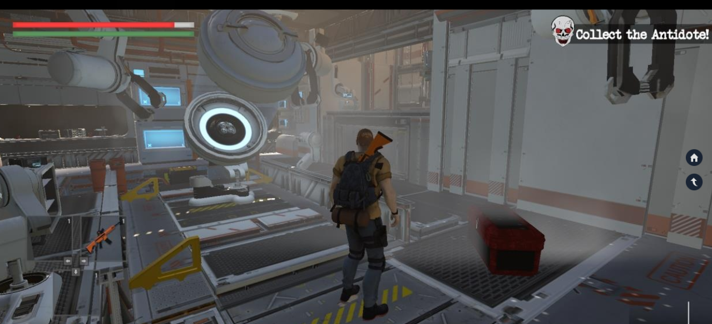
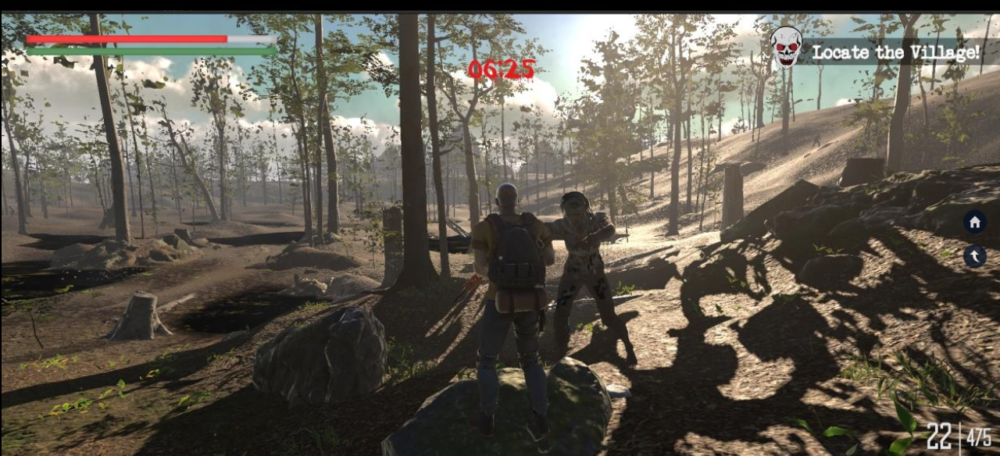
Final Year Project • Team Lead & Core Developer • 2022–2023
Academic Project
FarZone is a third-person PC game developed as my undergraduate
Final Year Project. I led a team of four students and contributed
across the design, implementation, integration, and delivery of
the project.
My technical contributions included designing core gameplay
systems, implementing AI-driven enemy behaviours using state
machines and pathfinding, developing character controllers and
environment interactions, and designing the game's storyline,
level flow, and cinematic sequences.
I also coordinated task distribution, code reviews, integration,
and project milestones to ensure the team remained aligned with
the academic requirements and delivery schedule.
Research relevance:
FarZone provided practical experience with agent behaviour, state
transitions, navigation, real-time responsiveness, and software
integration. It motivated my interest in studying how intelligent
agents can become more adaptive while remaining computationally
efficient.
Role
Team Lead & Core Developer
Hearts Card Game
A software development project exploring object-oriented design,
game logic, AI decision-making, card systems, and interactive
user interfaces.
Implemented game-state management, card distribution and
validation, player and AI behaviour, trick management, and
interactive gameplay using C# and Unity/WPF-based development.
Technologies:
C#, C# WPF, Unity, Object-Oriented Programming, AI Logic, JSON
Grocery Billing System
Data Structures & Algorithms • Team Lead • Collaborative Development
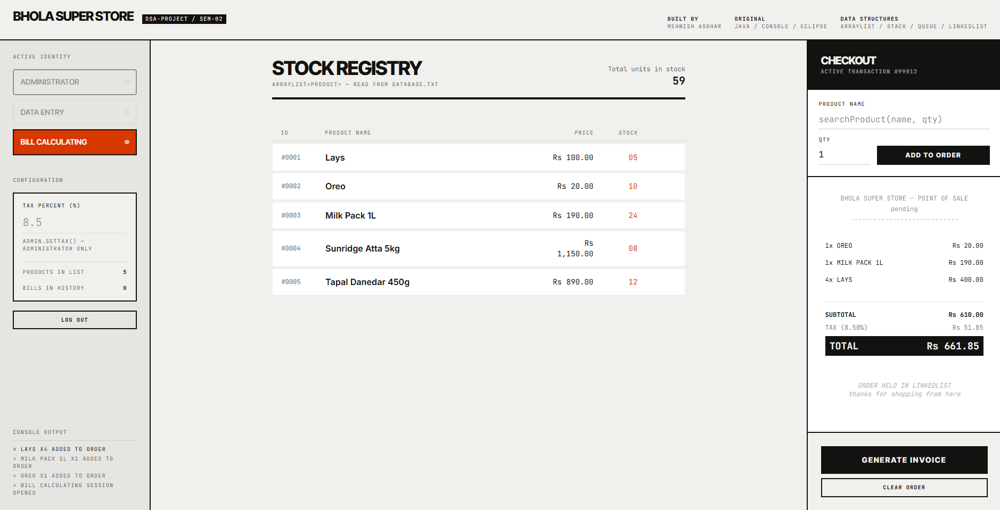
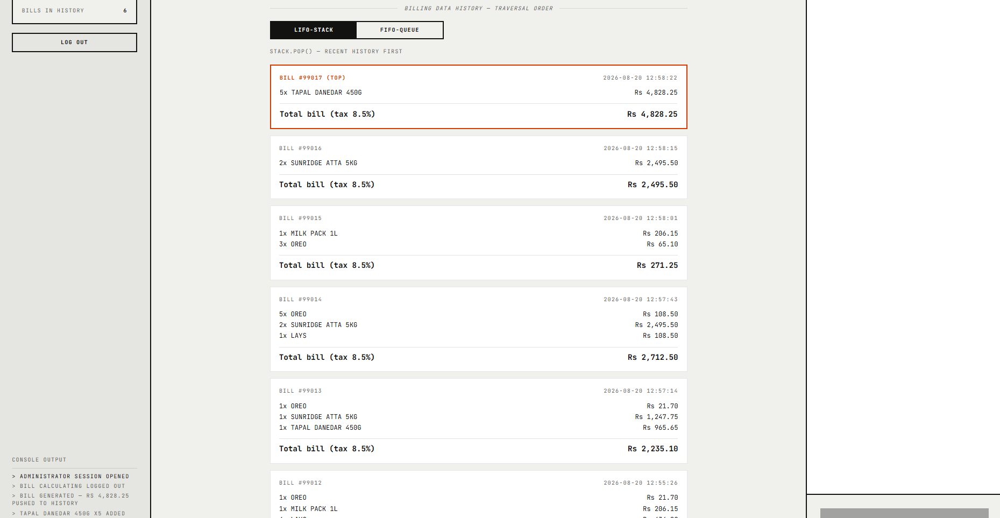
Developed a grocery billing system as a collaborative academic
project, with separate roles for administration, data entry, and
billing operations.
Worked across different system modules while applying core data
structures and algorithms to manage products, billing operations,
records, and system history. The project implemented stacks,
queues, linked lists, and LIFO/FIFO-based operations, along with
file read/write functionality for maintaining and retrieving
historical records.
Technical Focus:
Stacks, Queues, Linked Lists, LIFO/FIFO Operations,
Algorithms, File Handling
Role
Team Lead & Collaborative Developer
Library Management System
Object-Oriented Programming • Academic Project
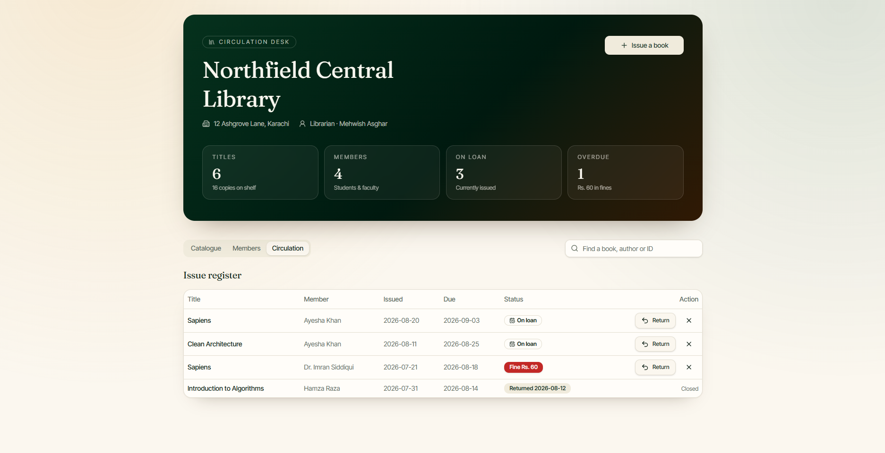
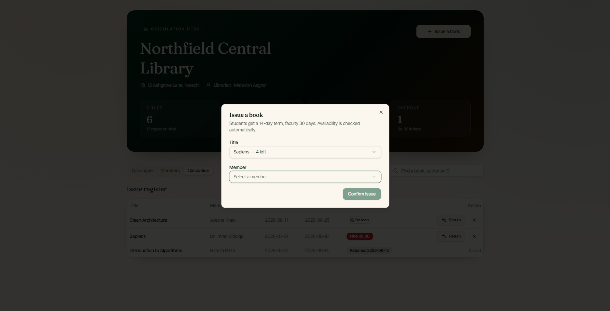
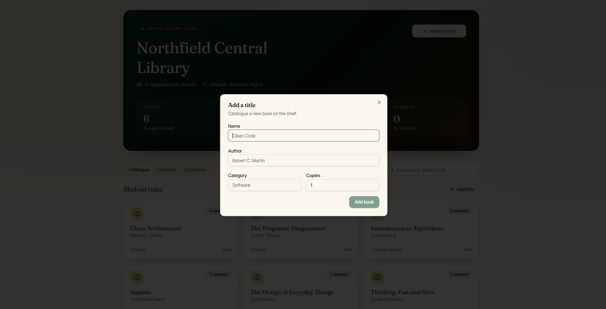
Developed a library management system to automate common
administrative tasks including book and member management,
issuing and returning books, searching records, librarian
management, and record printing.
The system was designed using object-oriented programming
principles to organize the different entities and operations
within the application. The project involved designing the
system structure, developing its graphical interface, and
implementing and testing the required functionality.
OOP Concepts:
Classes & Objects, Encapsulation, Inheritance,
Polymorphism, Abstraction
STARZ CITY — Cinema Ticket Booking System
Human-Computer Interaction • Academic Project
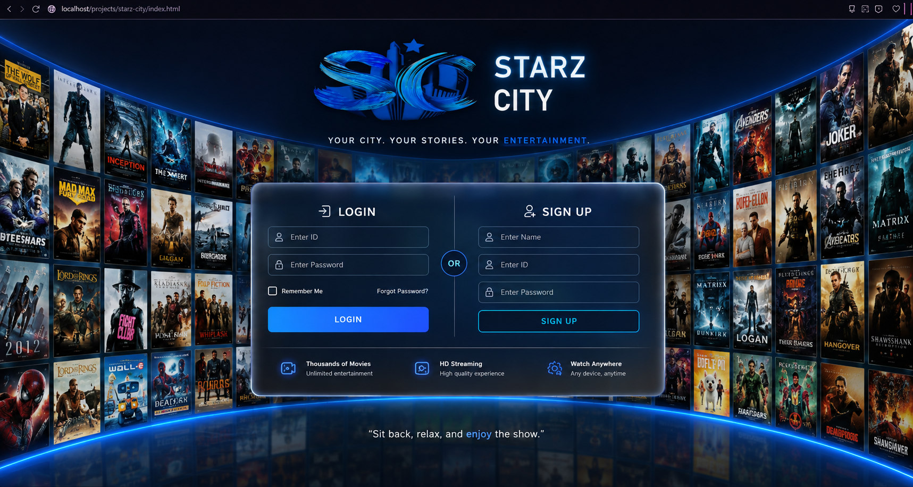
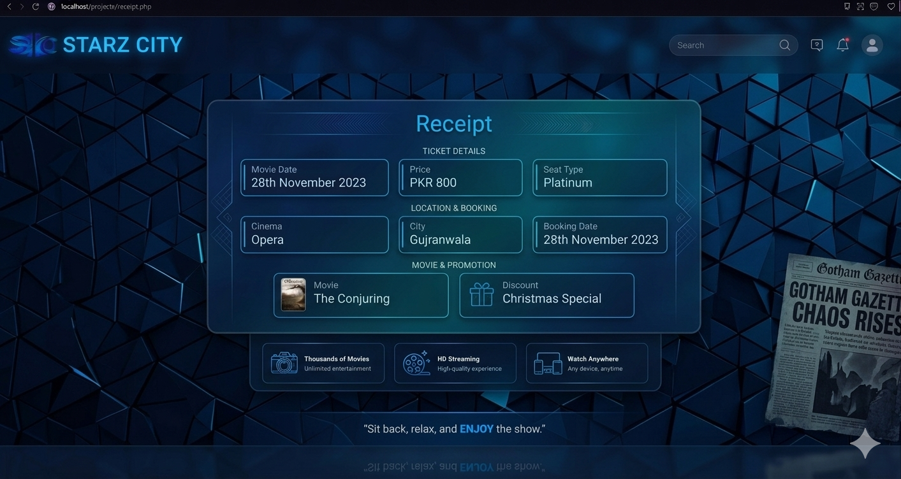
Designed and developed a cinema ticket booking system focused on
the interaction between users and the booking interface. The
system included separate buyer and administrator functionality
for managing and using the cinema booking workflow.
The project involved interface design, prototyping, and
consideration of usability throughout the development process.
A MySQL database was used to support the system's booking and
administrative functionality.
Technical Focus:
HCI, UI/UX Design, Prototyping, Usability,
MySQL, User Interaction
Published Contributions
Selected contributions from professional game development projects
released on mobile platforms. These examples highlight hands-on
experience in feature development, gameplay programming, UI/UX,
integration, debugging, testing, and production builds.
The Hunter — Deer Hunting Game
Connect Technologies | Development Contribution

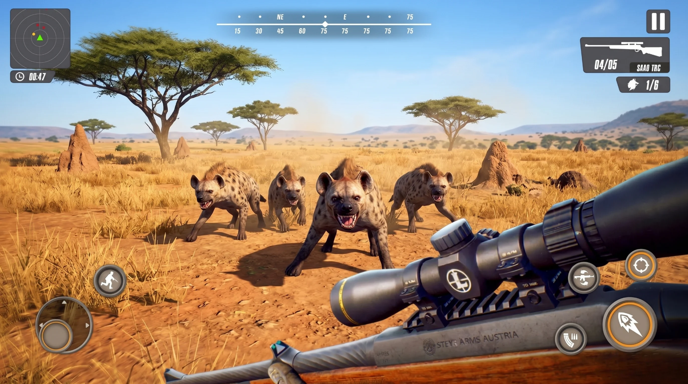
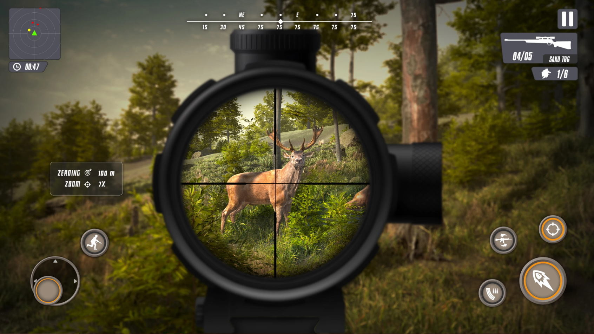
Contributed to the development of the published title by
implementing a new gameplay mode from scratch, including its
gameplay logic and supporting systems.
Additional responsibilities included implementing and modifying
gameplay features and weapons, integrating UI and audio changes,
connecting Firebase Analytics and advertising services,
resolving bugs, testing new functionality, and preparing
updated builds for release.
Technologies:
Unity 3D, C#, Firebase, AI/Gameplay Systems, UI/UX
Published:
Google Play
App Store
Dinosaur Hunter: Dino Games
Connect Technologies | Development Contribution
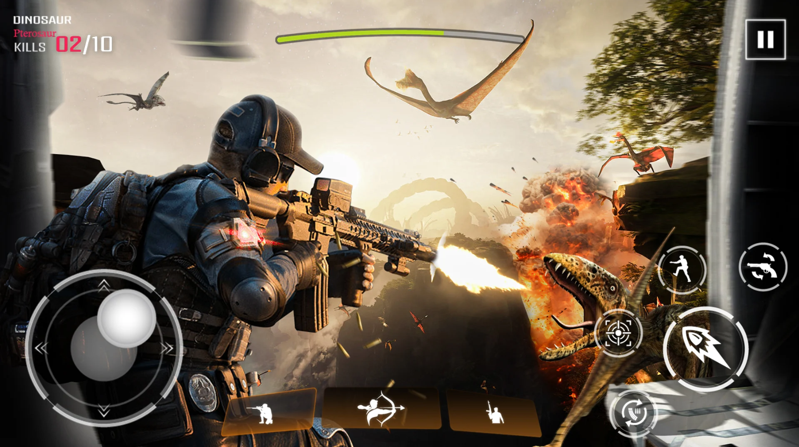
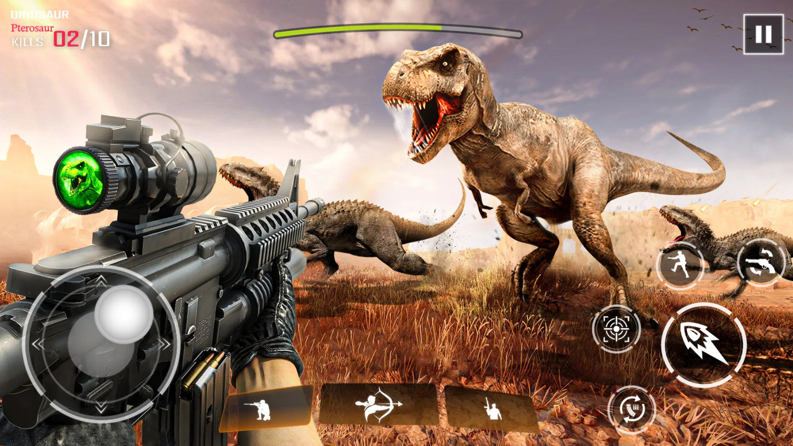
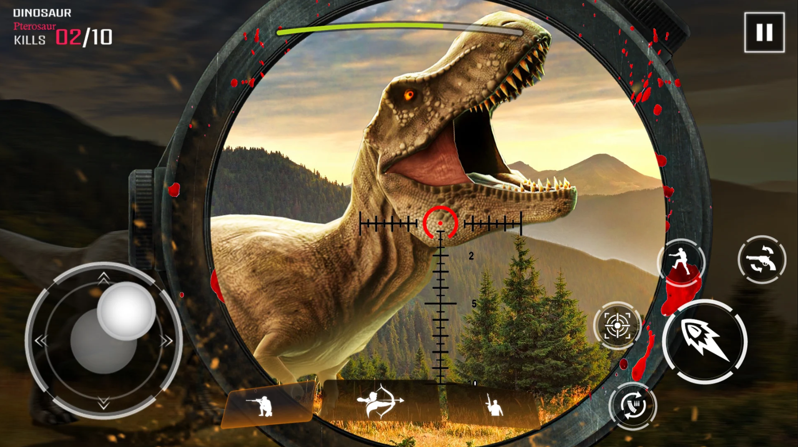
Contributed to the development of the published title through
gameplay feature implementation, weapon development, and
integration of new and modified UI elements.
Additional work included connecting Firebase Analytics and
advertising services, resolving gameplay and technical bugs,
testing changes across builds, and supporting the preparation
of updated production releases.
Technologies:
Unity 3D, C#, Firebase Analytics, UI/UX,
Gameplay Systems, Mobile Development
Published:
Google Play
App Store
Monster Truck Games
Connect Technologies | Collaborative Development

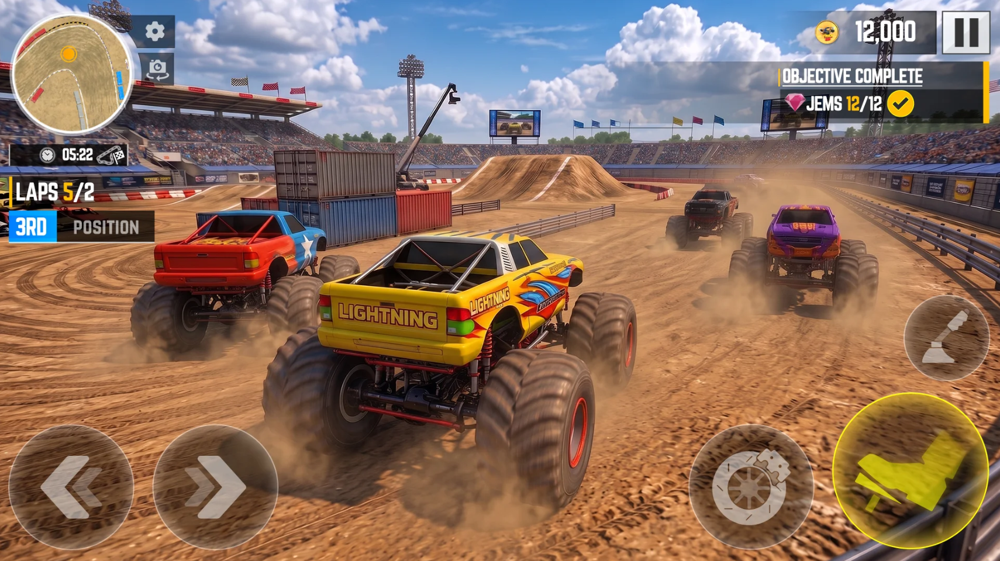

Contributed to the development and continued improvement of the
published title as part of a collaborative development team,
working across both user-facing and technical components.
My contributions included UI modifications and new interface
elements, audio integration, controller and input functionality,
bug resolution, testing, build updates, and implementation of
additional gameplay and technical features as required by the
project.
Technologies:
Unity 3D, C#, UI/UX, Audio Integration,
Input/Controls, Debugging, Mobile Development
Published:
Google Play
App Store
Additional Industry Experience
Beyond the projects showcased above, I have contributed to
10+ games and interactive projects across
mobile, PC, and other platforms.
My broader development experience includes gameplay programming,
feature development, UI/UX, AI systems, audio integration,
networking, third-party services, debugging, optimization,
testing, and production build delivery.
These projects include both collaborative studio work and
independent/client development, giving me experience adapting
to different technical requirements, team structures, and
production constraints.
Experience
Unity 3D Developer — Connect Technologies
Nov 2023 – Oct 2024
Worked on mobile and PC games using Unity and C#, contributing to
gameplay systems, AI behaviours, UI/UX, integrations, debugging,
optimization, testing, and production builds.
Contributed to new gameplay modes, weapons, UI and audio systems,
Firebase Analytics and advertising integrations, and updates
across 20+ released titles.
Unity 3D Game Developer — Freelance / Indie
Nov 2023 – Present
Developed interactive projects for Android, iOS, and PC across
gameplay programming, AI systems, UI/UX, networking, animation,
save systems, optimization, and platform-specific implementation.
Worked independently and with clients to translate project
requirements into functional interactive experiences.
FYP Coordinator & Lab Instructor — GIFT University
Nov 2024 – Present
Coordinate and mentor 60–70 Final Year Project groups per semester,
representing 250+ students, from proposal development through
final defense.
Review technical proposals, documentation, codebases, presentations,
and final reports while coordinating reviews, evaluation committees,
schedules, and faculty communication.
Conduct laboratory sessions in Programming Fundamentals,
Object-Oriented Programming, HCI, and Artificial Intelligence,
supporting students with programming, algorithms, software design,
and technical problem solving.